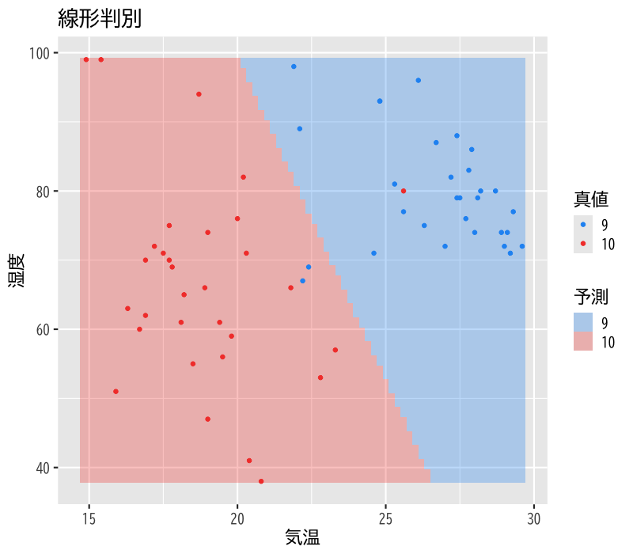

判別分析
考え方
(Press ? for help, n and p for next and previous slide)
講義の予定
- 第1日: 判別分析の考え方
- 第2日: 分析の評価
判別分析の考え方
判別分析
- discriminant analysis
- 個体の特徴量から その個体の属するクラスを予測する関係式を構成
- 関係式: 判別関数 (discriminant function)
- 説明変数: \(X=(X_1,\dots,X_q)\)
- 目的変数: \(Y\) (\(K(\geq2)\) 個のクラスラベル)
- 判別関数による分類:
- 1次式の場合: 線形判別分析 (linear discriminant analysis)
- 2次式の場合: 2次判別分析 (quadratic discriminant analysis)
判別分析の例
- 検査結果から患者が病気を罹患しているか判定する
- \(X=\) 検査結果
- \(Y=\) 病気・健康
- 今日の経済指標から明日株価が上昇するか予測する
- \(X=\) 今日の経済指標
- \(Y=\) 明日株価の上昇・下降
- 今日の大気の状態から, 明日の天気を予測する
- \(X=\) 今日の大気の状態
- \(Y=\) 晴・くもり・雨・雪
判別分析の考え方
- 確率による定式化
\(X=\boldsymbol{x}\) の下で \(Y=k\) となる 条件付確率 を計算
\begin{equation} p_k(\boldsymbol{x})=P(Y=k|X=\boldsymbol{x}) \end{equation}- 所属する確率が最も高いクラスに個体を分類
観測データ: \(n\) 個の \((Y,X_1,\dots,X_q)\) の組
\begin{equation} \{(y_i,x_{i1},\dots,x_{iq})\}_{i=1}^n \end{equation}- 観測データから\(Y\)の条件付確率 \(p_k(\boldsymbol{x})\) を構成
条件付確率
- 以下では \(X\) は離散型の \(q\) 次元確率変数として説明
事象 \(X=\boldsymbol{x}\) が起きたという条件の下で 事象 \(Y=k\) が起きる条件付確率
\begin{equation} p_k(\boldsymbol{x}) = P(Y=k|X=\boldsymbol{x}) = \frac{P(Y=k,X=\boldsymbol{x})}{P(X=\boldsymbol{x})} \end{equation}- 連続な確率変数の場合は確率密度関数を用いる
条件付確率の表現
- \(Y\)の条件付確率 \(p_k(\boldsymbol{x})\) のモデル化の方針:
- \(p_k(\boldsymbol{x})\) を直接モデル化する (例:ロジスティック回帰)
\(Y=k\) の下での \(X\) の条件付き確率質量関数
\begin{equation} f_k(\boldsymbol{x}) = P(X=\boldsymbol{x}|Y=k)=\frac{P(X=\boldsymbol{x},Y=k)}{P(Y=k)} \end{equation}のモデル化を通じて \(p_k(\boldsymbol{x})\) をモデル化する
- 本講義では 後者 について説明
演習
問題
- 以下の問に答えなさい．
- \(X,Y\)を離散確率変数とする． \(P(X=x|Y=k)\)から \(P(Y=k|X=x)\)を計算する式を導け．
事後確率による判別
Bayes の公式
\(f_k(\boldsymbol{x})\) から \(p_k(\boldsymbol{x})\) を得る数学的原理
原因 \(X=\boldsymbol{x}\) から結果 \(Y=k\) が生じる確率 を 結果 \(Y=k\) が生じたときの原因が \(X=\boldsymbol{x}\) である確率 から計算する方法
Bayes の公式 (Bayes’ formula)
\begin{equation} p_k(\boldsymbol{x}) = P(Y=k|X=\boldsymbol{x}) = \frac{f_k(\boldsymbol{x})P(Y=k)}{\sum_{l=1}^Kf_l(\boldsymbol{x})P(Y=l)} \end{equation}
Bayes の公式の略証
定義より
\begin{equation} f_k(\boldsymbol{x}) = P(X=\boldsymbol{x}|Y=k) = \frac{P(X=\boldsymbol{x},Y=k)}{P(Y=k)} \end{equation}
求める条件付確率:
\begin{equation} p_k(\boldsymbol{x}) = P(Y=k|X=\boldsymbol{x}) = \frac{f_k(\boldsymbol{x})P(Y=k)}{P(X=\boldsymbol{x})} \end{equation}
分母の展開:
\begin{align} P(X=\boldsymbol{x}) &= \sum_{l=1}^KP(X=\boldsymbol{x},Y=l)\\ &= \sum_{l=1}^Kf_l(\boldsymbol{x})P(Y=l) \end{align}
事前確率と事後確率
- 事前確率: \(\pi_k=P(Y=k)\) (prior probability)
- \(X=\boldsymbol{x}\) が与えられる前に予測されるクラス確率
- 事後確率: \(p_k(\boldsymbol{x})\) (posterior probability)
- \(X=\boldsymbol{x}\) が与えられた後に予測されるクラス確率
Bayes の公式による書き換え:
\begin{equation} p_k(\boldsymbol{x}) = \frac{f_k(\boldsymbol{x})\pi_k}{\sum_{l=1}^Kf_l(\boldsymbol{x})\pi_l} = \frac{f_k(\boldsymbol{x})}{\sum_{l=1}^Kf_l(\boldsymbol{x})\pi_l} \cdot\pi_k \end{equation}事前確率が説明変数の条件付確率の重みで変更される
事前確率の決め方
事前に特別な情報がない場合:
データから自然に決まる確率
\begin{equation} \pi_k = \frac{\text{\(Y=k\)のサンプル数}}{\text{全サンプル数}} \end{equation}事前に情報がある場合:
例: 食事・運動・飲酒・ストレスなどの生活の特徴から生活習慣病か否かを判別
- 健常者の食事・運動・飲酒・ストレスなどの特徴量を収集
- 罹患者の食事・運動・飲酒・ストレスなどの特徴量を収集
- 事前確率は 別の調査の日本人の罹患率 を利用
線形判別分析
判別関数
- 判別の手続き
- 説明変数 \(X=\boldsymbol{x}\) の取得
- 事後確率 \(p_k(\boldsymbol{x})\) の計算
- 事後確率最大のクラスにデータを分類
判別関数: \(\delta_k(\boldsymbol{x})\) (\(k=1,\dots,K\))
\begin{equation} p_k(\boldsymbol{x}) < p_l(\boldsymbol{x}) \Leftrightarrow \delta_k(\boldsymbol{x}) < \delta_l(\boldsymbol{x}) \end{equation}事後確率の順序を保存する計算しやすい関数
- 判別関数 \(\delta_k(\boldsymbol{x})\) を最大化するクラス \(k\) に分類
線形判別
- \(f_k(\boldsymbol{x})\) の仮定:
- \(q\) 変量正規分布の密度関数
- 平均ベクトル \(\boldsymbol{\mu}_k\): クラスごとに異なる
共分散行列 \(\Sigma\): すべてのクラスで共通
\begin{equation} f_k(\boldsymbol{x}) = \frac{1}{(2\pi)^{q/2}\sqrt{\det\Sigma}} \exp\left(-\frac{1}{2}(\boldsymbol{x}-\boldsymbol{\mu}_k)^{\mathsf{T}} \Sigma^{-1}(\boldsymbol{x}-\boldsymbol{\mu}_k)\right) \end{equation}
線形判別関数: \(\boldsymbol{x}\) の1次式
\begin{equation} \delta_k(\boldsymbol{x}) = \boldsymbol{x}^{\mathsf{T}}\Sigma^{-1}\boldsymbol{\mu}_k -\frac{1}{2}\boldsymbol{\mu}_k^{\mathsf{T}}\Sigma^{-1}\boldsymbol{\mu}_k +\log\pi_k \end{equation}
平均・分散の推定
平均の推定 (クラスごとに行う)
\begin{equation} \hat{\boldsymbol{\mu}}_k = \frac{1}{n_k}\sum_{i:y_i=k}\boldsymbol{x}_i \end{equation}ただし \(n_k\) は \(y_i=k\) であるようなデータの総数
分散の推定 (まとめて行う)
\begin{equation} \hat{\Sigma} = \frac{1}{n-K}\sum_{k=1}^K\sum_{i:y_i=k} (\boldsymbol{x}_i-\hat{\boldsymbol{\mu}}_k) (\boldsymbol{x}_i-\hat{\boldsymbol{\mu}}_k)^{\mathsf{T}} \end{equation}
演習
問題
- 以下の問に答えなさい．
\(X\)の条件付確率 \(f_k(\boldsymbol{x})\) に関する仮定:
- \(q\) 変量正規分布の密度関数
- 平均ベクトル \(\boldsymbol{\mu}_k\): クラスごとに異なる
- 共分散行列 \(\Sigma\): すべてのクラスで共通
のもとで 事後確率と線形判別関数の同値性
\begin{equation} p_k(\boldsymbol{x}) < p_l(\boldsymbol{x}) \Leftrightarrow \delta_k(\boldsymbol{x}) < \delta_l(\boldsymbol{x}) \end{equation}を示しなさい．
2次判別分析
2次判別
- \(f_k(\boldsymbol{x})\) の仮定:
- \(q\) 変量正規分布の密度関数
- 平均ベクトル \(\boldsymbol{\mu}_k\): クラスごとに異なる
共分散行列 \(\Sigma_k\): クラスごとに異なる
\begin{equation} f_k(\boldsymbol{x}) = \frac{1}{(2\pi)^{q/2}\sqrt{\det\Sigma_k}} \exp\left(-\frac{1}{2}(\boldsymbol{x}-\boldsymbol{\mu}_k)^{\mathsf{T}} \Sigma_k^{-1}(\boldsymbol{x}-\boldsymbol{\mu}_k)\right) \end{equation}
2次判別関数: \(\boldsymbol{x}\) の2次式
\begin{equation} \delta_k(\boldsymbol{x}) = -\frac{1}{2}\det\Sigma_k -\frac{1}{2}(\boldsymbol{x}-\boldsymbol{\mu}_k)^{\mathsf{T}} \Sigma_k^{-1}(\boldsymbol{x}-\boldsymbol{\mu}_k) +\log\pi_k \end{equation}
平均・分散の推定
平均の推定 (クラスごとに行う)
\begin{equation} \hat{\boldsymbol{\mu}}_k = \frac{1}{n_k}\sum_{i:y_i=k}\boldsymbol{x}_i \end{equation}だたし \(n_k\) は \(y_i=k\) であるようなデータの総数
分散の推定 (クラスごとに行う)
\begin{equation} \hat{\Sigma}_k = \frac{1}{n_k-1}\sum_{i:y_i=k} (\boldsymbol{x}_i-\hat{\boldsymbol{\mu}}_k) (\boldsymbol{x}_i-\hat{\boldsymbol{\mu}}_k)^{\mathsf{T}} \end{equation}
演習
問題
- 以下の問に答えなさい．
\(X\)の条件付確率 \(f_k(\boldsymbol{x})\) に関する仮定:
- \(q\) 変量正規分布の密度関数
- 平均ベクトル \(\boldsymbol{\mu}_k\): クラスごとに異なる
- 共分散行列 \(\Sigma_k\): クラスごとに異なる
のもとで 事後確率と2次判別関数の同値性
\begin{equation} p_k(\boldsymbol{x}) < p_l(\boldsymbol{x}) \Leftrightarrow \delta_k(\boldsymbol{x}) < \delta_l(\boldsymbol{x}) \end{equation}を示しなさい．
多値判別
多値判別の考え方
- 判別関数の比較
- 判別関数 \(\delta_k\) を比較
- 正規分布を仮定する場合は2次判別
- 2値判別の統合
- クラスでの比較: 最大の組合せ数 \({}_qC_2\)
- グループでの比較: 最大の組合せ数 \(2^{q}-2\)
- \(K-1\) 個の特徴量への変換
- 説明変数の線形結合による特徴量の構成
- Fisher の線形判別
変動の分解
- 3種類の変動
- \(A=\sum_{i=1}^{n}(\boldsymbol{x}_{i}-\boldsymbol{\mu})(\boldsymbol{x}_{i}-\boldsymbol{\mu})^{\mathsf{T}}\): 全変動
- \(W=\sum_{i=1}^{n}(\boldsymbol{x}_{i}-\boldsymbol{\mu}_{y_i})(\boldsymbol{x}_{i}-\boldsymbol{\mu}_{y_i})^{\mathsf{T}}\): 群内変動
- \(B=\sum_{k=1}^{K}n_{k}(\boldsymbol{\mu}_{k}-\boldsymbol{\mu})(\boldsymbol{\mu}_{k}-\boldsymbol{\mu})^{\mathsf{T}}\):
群間変動
(\(n_{k}\) はクラス \(k\) のデータ数)
変動の関係
\begin{equation} \text{(全変動)} = \text{(群内変動)} + \text{(群間変動)} \end{equation}\begin{equation} A = W + B \end{equation}
演習
問題
- 以下の問に答えなさい．
- 全変動が群内・群間変動に分解されることを示しなさい．
説明変数の線形結合で新たな特徴量を構成する．
\begin{equation} Z=\boldsymbol{\alpha}^{\mathsf{T}} X \end{equation}このとき\(Z\)の群内変動と群間変動を求めなさい．
Fisher の判別分析
Fisherの線形判別
- 判別のための特徴量 \(Z=\boldsymbol{\alpha}^{\mathsf{T}} X\)
- 良い \(Z\) の基準:
- クラス内では集まっているほど良い (\(\boldsymbol{\alpha}^{\mathsf{T}} W\boldsymbol{\alpha}\)は小)
- クラス間では離れているほど良い (\(\boldsymbol{\alpha}^{\mathsf{T}} B\boldsymbol{\alpha}\)は大)
Fisherの基準:
\begin{equation} \text{maximize}\quad \boldsymbol{\alpha}^{\mathsf{T}} B\boldsymbol{\alpha} \quad\text{s.t.}\quad \boldsymbol{\alpha}^{\mathsf{T}} W\boldsymbol{\alpha}=\text{const.} \end{equation}クラス内変動を一定にしてクラス間変動を最大化する
Fisherの線形判別の解
- \(\boldsymbol{\alpha}\) は \(W^{-1}B\) の固有値 (主成分分析の導出と同様)
\(K=2\) の場合: 最大固有値を用いる (線形判別と一致)
\begin{equation} \boldsymbol{\alpha}\propto W^{-1}(\mu_1-\mu_2) \end{equation}- 一般の \(K\) の場合: 第1から第 \(K-1\) 固有値を用いる
- 判別の手続き:
特徴量とクラスの中心までの距離を用いる- \(d_{k}=\sum_{l=1}^{K-1}(\boldsymbol{\alpha}_l^{\mathsf{T}}\boldsymbol{x}-\boldsymbol{\alpha}_l^{\mathsf{T}}\boldsymbol{\mu}_k)^2\) を計算
- 最小の \(d_{k}\) となるクラス \(k\) に判別
解析の事例
データについて
気温と湿度による月の判別
10,11月のデータの散布図

Figure 1: 散布図
線形判別

Figure 2: 線形判別
2次判別

Figure 3: 2次判別
9,10,11月の多値判別

Figure 4: 多値判別
次週の予定
- 第1日: 判別分析の考え方
- 第2日: 分析の評価